问题
教室里的 85 寸触控大屏，既要让老师流畅播放课件、书写板书，又要让身高不同的学生也能参与互动；同时还要考虑长时间亮屏的耗电，以及教室光线下的清晰可读。
希沃 Seewo · 教育白板 Launcher — 2020
Intro · 项目背景
希沃白板是专为老师打造的互动教学平台，针对信息化教学场景，提供课件制作、互动授课、在线课堂、微课录制、课件资源库等功能，让老师一站式完成教学的主要环节。
我独立负责 Launcher 优化项目的设计与对接，从需求分析、用户画像、风格探索到深浅双模式界面，让它更符合中小学的真实教学场景。
教室里的 85 寸触控大屏，既要让老师流畅播放课件、书写板书，又要让身高不同的学生也能参与互动；同时还要考虑长时间亮屏的耗电，以及教室光线下的清晰可读。
从需求分析与用户画像出发，确立「成长 · 童趣 · 活力」的视觉方向；用大圆角、毛玻璃、轻质感塑造亲和力；按人体工程学重新规划左右卡片布局与图标位置；提供深色 / 浅色双模式。
Launcher 更符合中小学教育场景，深受同学们的喜欢；界面美观度、品牌一致性、设计规范遵循度通过了专家评审与 A/B 测试评估。


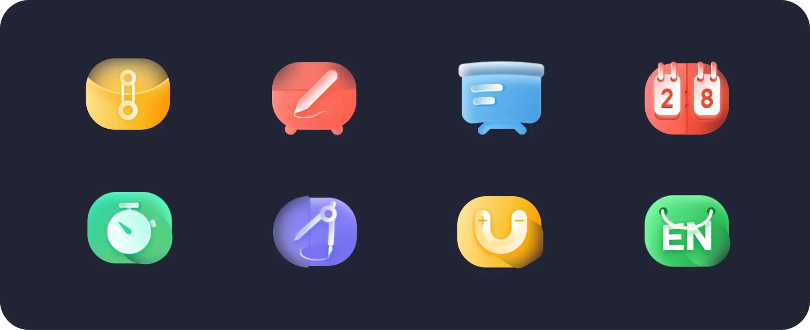
01 · Requirements analysis · 需求分析
大屏不是放大的手机。动手之前，我把硬件、系统、环境、用户与场景逐一拆开，转化成可执行的设计考量。
设计考虑系统耗电情况、室内大屏光源亮度与色彩还原度；触控式操作要符合人体工程学，降低交互难度。
运用安卓原生 Roboto 字体，设计遵循安卓原生规范。
调研学科老师的男女比例、年龄分布，以及老师、学生的人物画像；考虑教室环境因素。
课件展示要流畅、操作指引清晰易上手；书写流畅，工具使用科学易操作。
课件播放展示、在白板上书写板书、演示学科工具等操作，完成教学任务。
与学生有交互：考虑学生身高与可触控区域，互动要有吸引力、新奇、有趣。
02 · User personas · 用户画像
调研希沃白板、班级优化大师、作业帮、学而思等相关产品的用户画像（数据来源：百度指数），分析年龄与性别分布，提炼出教师、小学生、初中生三类典型用户，以及他们各自的目标与痛点。
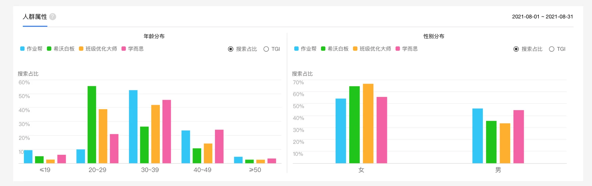
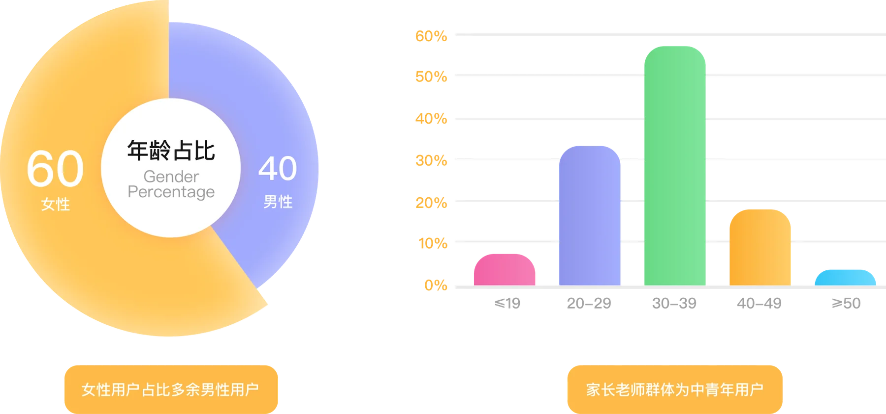
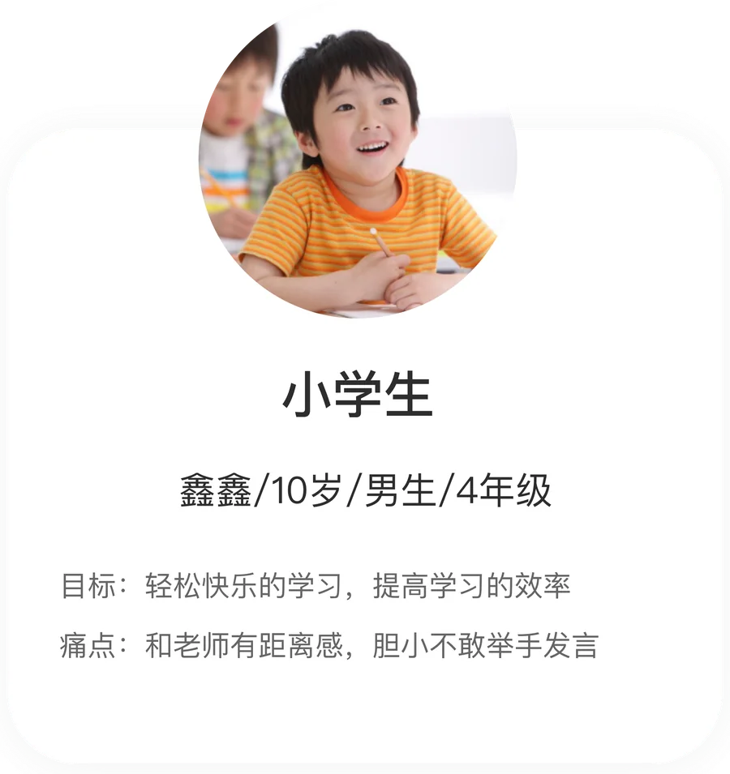
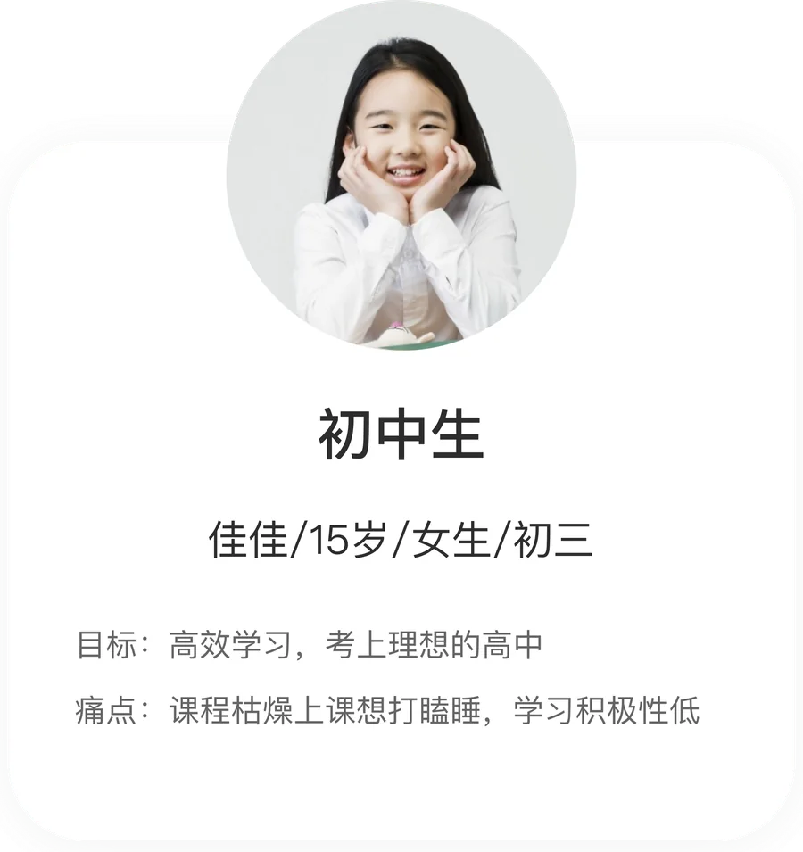
03 · Style exploration · 风格探索
围绕图形元素、色彩元素、字体体系、界面布局、质感与风格、动画与动效六个维度展开探索，再用情绪板衍生出关键词，作为后续视觉决策的依据。
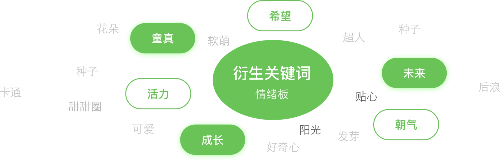
04 · Color & font · 颜色与字体
颜色从「成长、童趣、活力」三个关键词出发，延展出一组明快的辅助色。字体采用安卓原生 Roboto：Regular 120pt 用于时间、Regular 32pt 用于日期；Medium 18pt 用于列表流标题与图标文字。
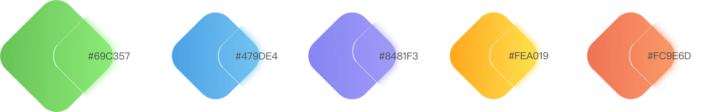
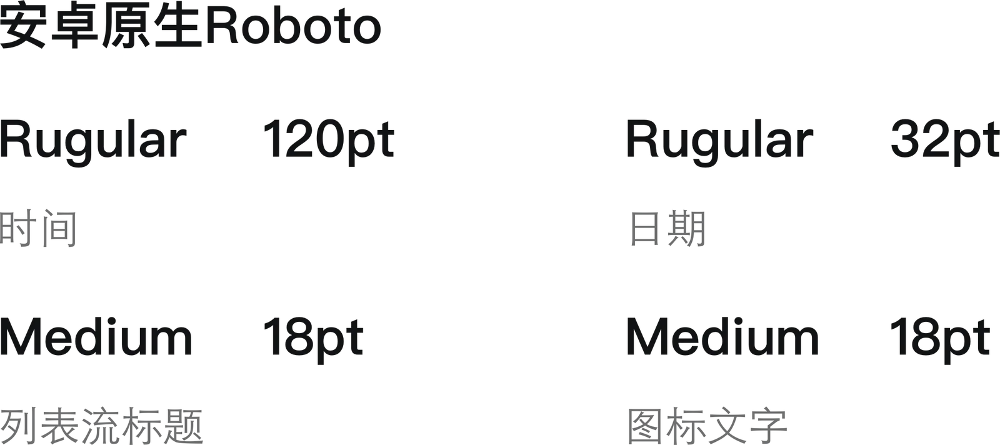
05 · Texture & icon · 质感与图标
把情绪板关键词翻译成视觉语言：气泡、翅膀、羽毛 → 毛玻璃；包容、安全、亲和力 → 大圆角；彩虹、欢乐、童真、可爱 → 轻质感。
图标采用标准化制图，大圆角设计更具亲近感，符合 K12 用户群体的品牌调性，并同时适配深色与浅色模式。
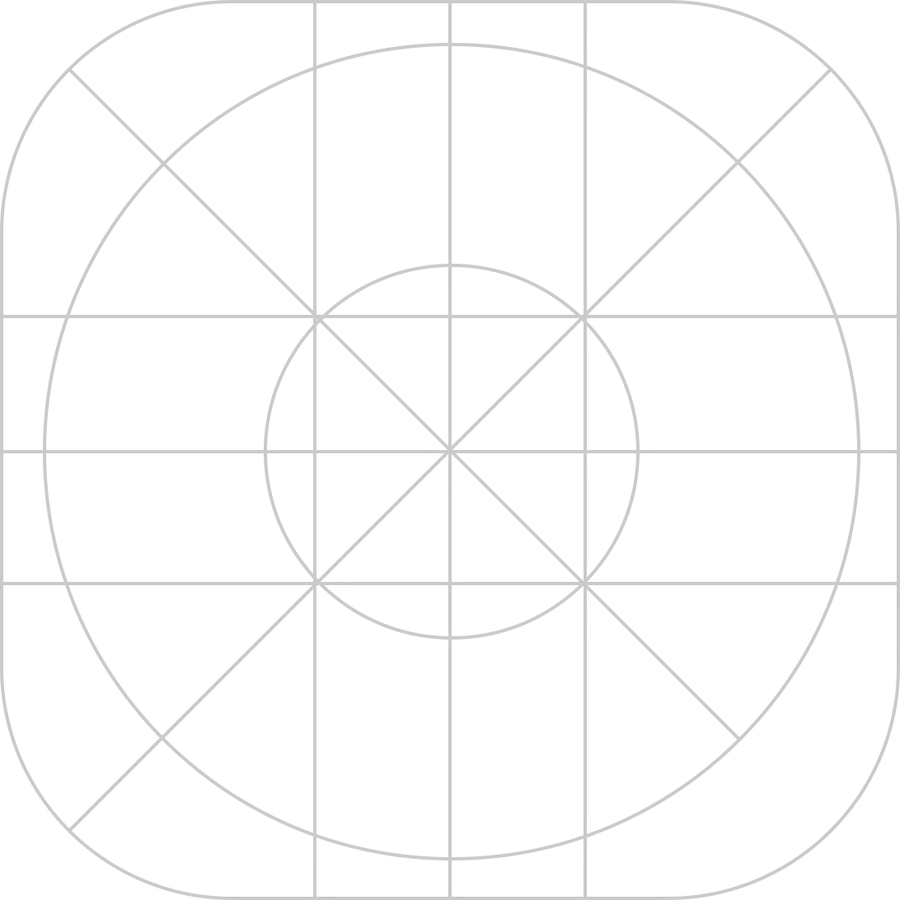
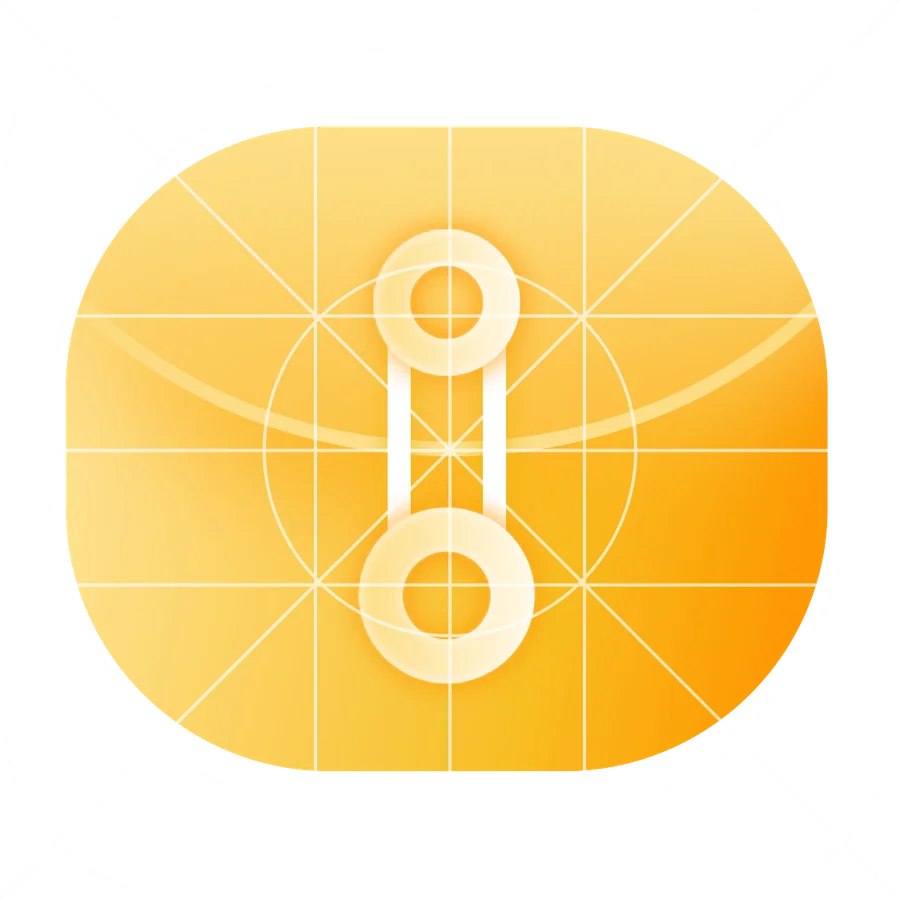
06 · Interface layout · 界面布局
左右布局：黑板为长方形白板，相比居中排布，左右卡片式布局可以展示更多信息，操作动线也更顺畅。
人体工程学：卡片的操作行动点位于教师轻松操作的区间；学生会用到的几何画板、物理大师等图标，放在低于学生操作高线的位置；师生互动场景的按钮，也都在学生可触达的区域内。
根据格式塔原理，利用留白区分不同模块，让界面更轻量。
同样一块屏幕，老师站着点、学生踮脚点——图标的位置本身就是交互设计。
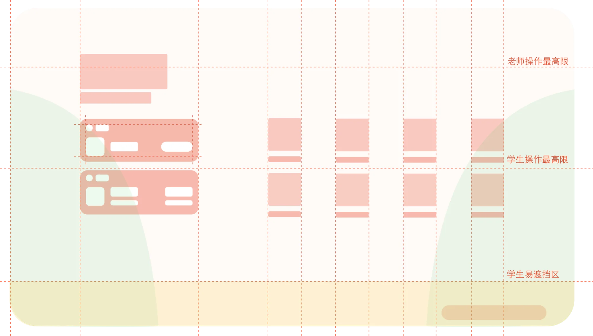
07 · User interface · 用户界面
深色模式：在教室环境下，85 寸大屏长期亮屏，深色模式能降低电力消耗，也为视力不佳和对强光敏感的用户提供更好的可视性。
浅色模式：绘制轻质感扁平风格插画，让大屏信息清晰易读——面向教师，做到简约、轻量、有品质感；面向中小学生，用简约插画配合 Q 萌图标，活泼可爱，满足趣味性。